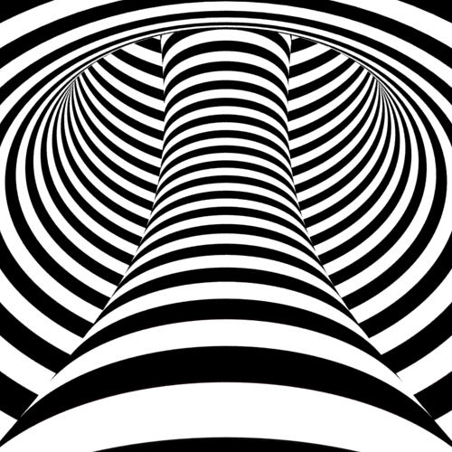
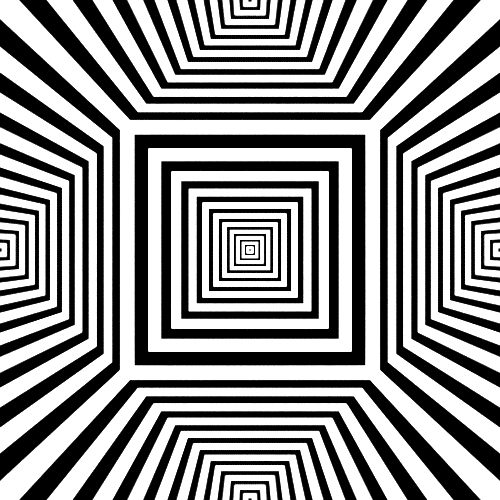
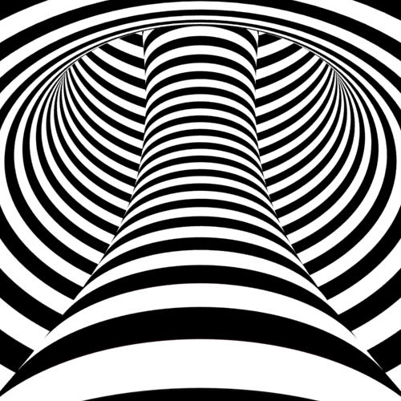
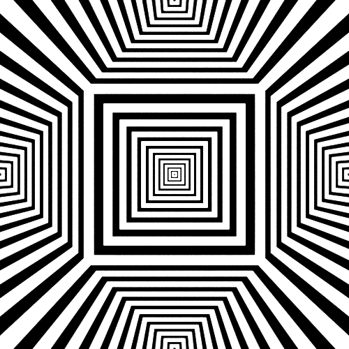

Die Definitionen
Je nach dem, wie man es definiert, ist es unterschiedlich, was das Resultat oder Ergebniss ist. Ausserdem gibt es auch noch mehrere kleine Dinge, die man beachten sollte, falls es mal dazu kommt, etwas zu sein. Manchmal kann es aber auch umgangen werdem indem man das grosse Ganze betrachtet und den richtige Schluss fasst. Wenn man Glück hat, kann man die kleineren Sachen, wie zum Beispiel jene, die das andere nicht berühren, mitnehmen und für sich gebrauchen. Innerhalb dieser Definition gibt es regelmässige kleine umstrukturierungen, um das vielfache einer Dreiteiligkeit, zu beschreiben.

Links
Ich habe Spass an animierten Bildern
 


